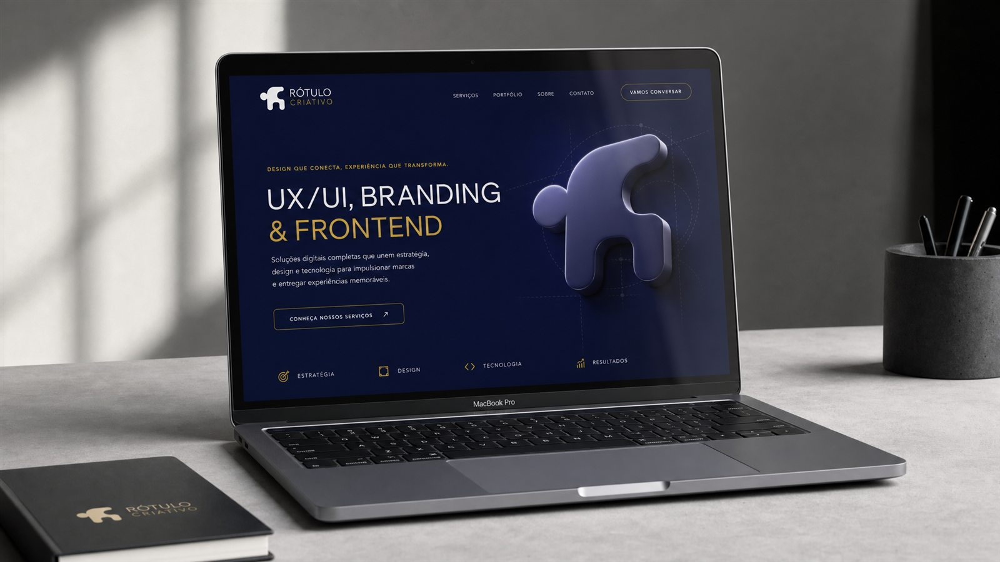

Sites
Sua marca também precisa funcionar na tela.
Crio sites institucionais, landing pages e experiências para e-commerce que combinam identidade, usabilidade e uma presença digital bem construída.
Web design · Landing pages · Shopify · E-commerceConhecer projetos web